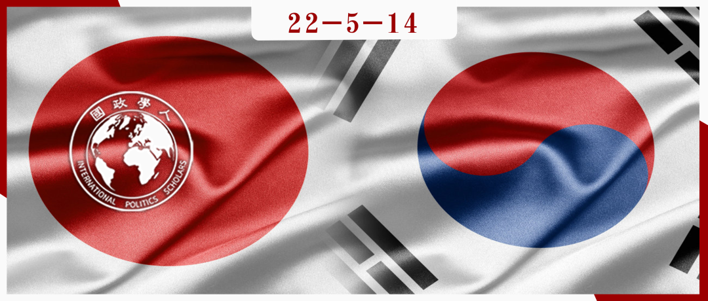
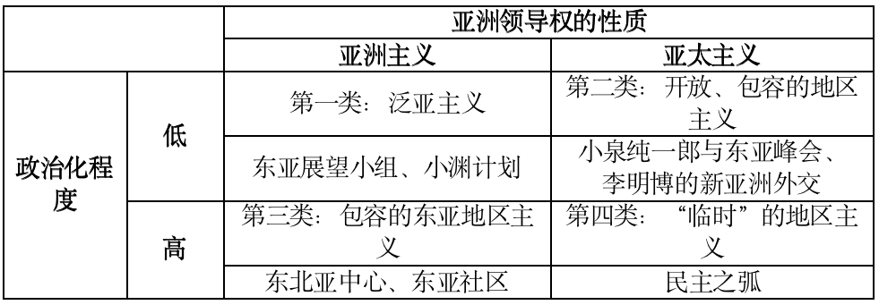

收录于合集

**
**
国内合法性与东亚地区主义
作者： Seo-Hyun Park，拉斐特学院政府与法律系助理教授，研究兴趣包括国家认同政治、军事联盟、全球化与安全；Il Hyun Cho，拉斐特学院政府与法律系及亚洲研究项目助理教授，研究方向包括国际关系理论、全球治理、安全研究、核扩散、地区主义和东亚政治。
编译： 姚博闻（国政学人编译人员，新加坡国立大学公共政策系）
来源： Cho, I. H., & Park, S. H. (2014). Domestic legitimacy politics and varieties of regionalism in East Asia. Review of International Studies , 40(3), 583-606.

导读
经济发展水平引领世界的东亚地区为何一直未能形成一个持久稳定的地区机制？多年来，这一问题持续吸引着人们的关注与讨论。不同于许多研究优先分析中美两个大国对东亚地区主义的影响，本文将目光放在了日本与韩国两个本地区国家，并认为对连贯稳定的东亚地区主义的需求更多地来自于这两国。依据领导权类型的不同，作者将东亚地区主义相关的倡议分为了更关注本地区国家合作的“亚洲主义”和包含了美国和其他地区外国家的“亚太主义”，同时又根据政治化程度的高低对每一类型进行细分。最终，作者得出结论，日本和韩国领导人不同时期提出的地区主义倡议并非主要由结构性压力或利益决定，而是为了在国内政治中获得更大的合法性。
本文角度较为新颖。尽管发表于2014年，但文中提出的“亚洲主义”与“亚太主义”分类模式在如今仍然适用，并能用来分析日韩两国近年来出台的某些地区主义政策，如日本的“自由与开放的印太”战略与韩国文在寅政府对朝韩美三国领导人峰会的积极倡导。一个可以进一步挖掘的角度是，国内合法性对地区主义的影响为何会在东亚地区如此的显著，在这一点上更深入的探究应当会使相关研究更加的完整。
摘要
是什么推动了东亚的地区主义？中国的崛起和人们感知到的美国影响力的下降引发了有关地区未来秩序的辩论，这其中包括了一个尚未解决的问题，即哪个国家的领导力更加稳定，并能被地区内其他行为体认为是正当的。然而，令人困惑的是，对形成协调一致的、独特的东亚地区机制的持续需求并非来自中国或美国（而这正是现有研究的重点），而是来自日本和韩国。在本文中，作者提出了一个替代框架，以将东亚地区主义的多样性概念化，强调地区合作努力中涉及的多重轴心和混合层次的政治。作者发现，自20世纪90年代以来，东亚地区主义的竞争性提案并非由结构性压力或利益趋同所决定，而是国内合法性政治的结果。日本和韩国领导人在不同时期提出了各自的地区建设方案，以吸引其国内有争议的、关于如何最好地从地区大国那里寻求自主权的观点，并提高各自在国内和地区的政治地位。
编译
01
简介
中国的崛起和人们感知到的美国影响力的下降引发了有关东亚地区秩序未来的辩论，这其中包含了一个尚未解决的问题，即哪个国家的领导可能更稳定，并能被地区内其他国家接受为合法的。然而，令人困惑的是，一直要求建立一个协调一致且独特的东亚地区机制的并非中国，而是美国的两个关键盟友日本和韩国。在过去10年左右的时间里，日本和韩国各自推动了包括中国、但通常不包括美国的泛东亚地区主义。同时，日本和韩国又很少接受中国在地区主义事务中的领导作用。 本文提出了一个替代框架，将东亚地区主义的多样性概念化，强调在地区一体化中涉及的多重轴心和不同层次的政治。 作者认为，日本和韩国不满足于跟随者的角色，这一点在大国塑造地区稳定与秩序方面的作用的现有描述中未被重视。
日本和韩国领导人在不同时期提出了各自的地区建设倡议，而非在现有的机制框架上继续发展，以提高各自在国内和地区的政治地位。然而，地区机制的横向增加并不一定会成功转化为机制构建或地区合作。事实上，在东亚，地区机制倡议虽然由来已久，但单个倡议往往不能长存。因此，不仅需要研究机制的影响，而且还要研究有助于机制发展的因素，如机制设计、冲突解决模式，以及作者认为地区机制的水平扩散背后存在着的多重轴心。
本研究旨在了解东亚地区日益增长的机制复杂性。 具体来说，作者提出了以下问题：为什么日本和韩国领导人提倡不同的地区主义愿景？此外，他们在什么条件下寻求创建新的机制框架，而非在现有机制内运行？作者发现，相互竞争的地区主义模式并不仅仅由结构权力或利益趋同决定，而是地区国家国内辩论的延伸，这种辩论和该国在地区和全球范围内获得自主权和地位有关。 本文试图提供一个包含国内有关地区主义的辩论的理论框架，旨在展示以提高政治合法性为核心的国内政治进程如何产生不同类型的地区建设倡议。
02
解释东亚地区主义的多样性
有关东亚区域主义的现有研究认为，地区机制和思想的多种组合反映了外部和内部力量共同塑造的独特区域进程。一些学者认为，由于不同国家的优先事项不同，东亚国家之间缺乏共同利益，并依据功能发展出了不同的地区主义。因此，东亚地区主义主要是经济性质的，并在很大程度上受到危机驱动和问题引导的影响。经济地区主义在很大程度上是受外部冲击影响形成的，而东亚的安全区域主义则不同，它是为了应对“更具特殊性的内生安全问题”而出现的。
其他学者则倾向于将地区主义概念化，认为其主要是国内利益集团和其他经济和社会行为体自下而上的偏好形成过程的结果。传统上，区域化，即通过贸易和投资网络实现市场驱动的一体化进程，一直是东亚地区动态的最显著特征之一。这一过程往往“没有协调的政府参与”，这是走向地区主义的关键。但人们注意到，该地区在正式的、机制化的地区主义方面缺少进展。彼得•卡森斯坦（Peter Katzenstein）认为，这种“开放地区主义”（open regionalism）主要源于两方面，一是美国的主导地位，美国在该地区历来偏好双边主义；二是亚洲国家对主权的重视和对正式机制的厌恶。
植根于传统地区安全和经济结构、并以美国领导为基础的开放地区主义框架正日益受到一系列新的地区现实因素的挑战。美国在该地区的影响力被认为在减弱，以及中国的崛起，可能会改变美国主导的中心- 辐条式（hub-and- spokes）安全结构。该地区也经历了一系列地区性危机，而美国在应对这些危机方面的领导力有限。在这种新的地区背景下，一系列地区机制出现了，如东盟10 + 3（APT）、亚太经济合作组织（APEC）、东盟地区论坛（ARF）、清迈倡议（CMI）、东亚峰会（EAS）、防扩散安全倡议（PSI）和跨太平洋伙伴关系（TPP）。东亚领导人不再满足于起先区域化促进者的角色，尽管仍存在许多障碍和不佳表现，但他们一直渴望设定地区主义的议程和范围。这些不同的区域倡议不仅表明了国家模式的多样性，也表明东亚国家国内政治中地区主义议程日益突出。不同国内联盟（如国际主义或民族主义联盟）的相对实力塑造了地区互动的模式。从这一有利的角度来看，当支持一体化的联盟（integrationist coalition）在整个地区占上风时，地区主义可能会得到促进。
这一模型突出了地区政策结果的国内因素，有效地显示了不同类型的区域秩序的结果。该模型在理论上预计，民族主义（孤立主义）和国际主义（一体化主义）联盟之间将会出现国内政治竞争。这一过程中会出现不同类型的地区主义。例如，获胜联盟中金融部门的主导地位将促进金融地区主义，而私营企业部门的政治影响可以用扩大生产网络或增加投资流动的形式促进地区主义。在中国崛起的情况下，日本和韩国的地区主义类型将反映出两国主导联盟的偏好。鉴于两国与中国日益增长的经济联系，可以期望它们以经济地区主义的形式建立更全面和广泛的地区联系。随着时间的推移，这种联系可能会溢出到政治和安全方面。
然而，东亚的形势似乎并没有特别好地证实这一预测。当权的领导人并不总是对国内特定联盟团体的利益做出回应。他们往往积极推动自己的地区倡议，以反映特定时期的结构环境和国内政治条件，例如安倍晋三的“民主之弧（Arc of Democracy）”主张强调日本、印度、澳大利亚在广义的亚太地区主义中的作用，这与经济利益无关，并且有可能对日本与中国的经济关系产生负面影响。换句话说，国内团体对地区主义的需求虽然可能是必要的，但很少是充分条件，因为私人行为体往往缺乏将其利益聚合并转化为政策的政治机制。在东亚，政府和领导人在这一方面发挥着关键的作用。
地区主义也反映出了更广泛的政治争议，即外交政策自主权和国际声望，而不仅仅是主导联盟的利益。 例如，为了提高韩国的地区地位和自主权权，韩国总统卢武铉不顾东亚展望小组（EAVG）的成功，将地区主义的范围缩小到了东北亚。 卢武铉强调，韩国传统上是该地区的边缘国家，但现在它的目标应该是成为东北亚地区经济和政治的“中心”，不仅成为富强的国家，还要促进韩国在政治和安全领域的地区主导地位。而随着与崛起的中国的联系日益增多，日韩国内公众对地区未来秩序的辩论也在增加，迫使两国一些领导人寻求不那么全面和更模糊的地区主义类型。因为这些国内辩论不仅仅是关乎民族主义和全球主义之间的选择，更关乎能实现权力、繁荣和声望最大化的一体化道路选择。主张一体化的新自由主义认为，为了经济联系和繁荣的更大利益，可以把对国家自主权的渴望搁置。对个体行为体来说，这可能是合理的，但对国家政府来说并非如此，它们同时也会考虑国际地位、声望以及更多的自主权和独立。
03
国内合法性政治和地区建设倡议
东亚的地区主义也并非纯粹是被动或受危机驱动的。东亚领导人在亚洲金融危机之前就转向了地区主义。日本和韩国领导人积极主动地发起地区倡议，目的是提高政治合法性。虽然加强联盟关系和扩大机制联系有时对地区领导人来说是必要的，但这些战略也以牺牲外交政策自主权和政治合法性为代价。因此，日本的地区主义是为了在不构成威胁的情况下提高地区影响力，减少对美国的依赖。正因为如此，日本和韩国政府很少在地区主义中一边倒地接受美国或中国的领导角色，东亚地区主义中没有天生的领导者和明显的追随者，领导权仍然是多变和有争议的。
相反，东亚地区所追求的各种地区主义都显示出旷日持久的国内合法性政治，而这一国内合法性政治往往和该国与地区公认大国之间的关系密切相关。日本的外交政策，包括对朝鲜半岛的外交政策，通过特定机制使日本领导人合法化，如公众对强硬外交的赞赏，或对强大的地区行动者（包括美国）施压的坚决应对。自20世纪90年代初以来，地区主义提议一直是日本和韩国领导人获得国内支持，并在地区或全球提高国际地位的渠道。此外，它们还反映出领导人对自己地区领导力的宣示，表明他们与前任或政治对手有着根本的不同。例如，尽管韩国前总统金大中建立的东亚展望小组和东亚研究小组（EASG）等备受瞩目的地区倡议相对取得成功，但后来的政府拒绝继续提供支持。
那么，为什么地区主义和地区建设倡议能让领导人合法化呢？本文假设地区主义提议包含外交政策目标和内容，并向国内受众传递延续或变化的信号。地区主义在东亚不是地区或国内层面的共识，因此，地区建设倡议反映了日本和韩国国内在参与全球事务特别是与美、中关系方面存在的相互竞争的理念。这就是为什么对地区领导权的要求并没有一直为政府带来合法性，不同地区倡议的成本和收益各不相同。例如，卢武铉和鸠山由纪夫的地区主义构想都未能提高其正当性，他们的构想迎来普遍的困惑，并招致了许多反对。一体化倡议的很多版本在其国内都有争议，而偏离现有政策平台也会产生政治上的后果。
因此，东亚地区各种各样的区域建设举措，都是领导人试图产生或增强合法性的结果，并反映了他们的愿景在公共舞台上受到政治争议的程度。具体而言，这种国内合法性政治是由以下两个维度塑造的：1）亚洲领导力的内容和性质，涉及区域边界和成员关系问题（如只包含亚洲的地区主义vs亚太主义），2）国内或地区对拟议的地区倡议的政治化程度。就地区领导力的内容而言，日本和韩国领导人倾向于主张地区主义是实现更大自主权、减少对外部大国依赖的途径。不过，尽管一些领导人将自主权解读为多样化和多层次外交，也有领导人强调在美国领导的联盟体系内，加强地区层面的参与和领导，并坚持全球标准或呼吁普世价值。鉴于中国的崛起，日本和韩国关于自主权和地区领导的辩论导致了不同的地区建设建议的出现：一个是亚洲人的亚洲，另一个则划定了一个更具包容性的、以美国为导向的成员国界限。
这种在排他的亚洲主义与更包容、更开放的亚太主义之间摇摆不定的模式近年来已成形，因为该地区的不同领导人都寻求对不断变化的地区秩序作出反应。在与中国打交道时，亚洲主义阵营往往提出亲中国政府并使得与美国同盟关系紧张的各种地区倡议。相反，亚太主义阵营则强调美国在地区安全方面的作用，并指出与中国的竞争是地区主义的驱动因素。
塑造地区主义国内政治的第二个因素是政治争论的程度。地区主义举措可以增强或削弱领导人的合法性，这取决于它能产生多大程度的政治化和反对。由于如何最好地管理该地区大国的问题在该地区的整个历史中一直备受争议，所以地区主义一直是一个突出的，而且常常是有争议的问题。日本和韩国的重要外交政策决定，以及围绕与美国结盟关系性质的政治，包括在以美国为导向的双边主义和更以地区为中心的多边主义之间做出选择，一直是两国政党和派系政治的中心。总的来说， 日本和韩国的保守派领导人和政党在呼吁改变地区政治和经济框架方面相当谨慎，而自由主义倾向的政党则表现出更大胆的以地区为中心的举措。 最具争议的地区主义思想往往出现在日本和韩国的领导层换届期间。这种政治“竞标”使得涉及联盟内部政治和地区主义的具体外交政策决策变得政治化和两极化，并且会导致政策和机制变化。
建立新的地区提议框架往往是至关重要的。当领导人过分强调“反向路线”（reverse course），即试图将自己与前任的政策区别开来时，他们就会受到广泛的批评，被认为是迎合大国。例如，当卢武铉和鸠山由纪夫各自提出自己加强东亚地区自主权的愿景时，他们遭到了用一个霸权（美国）换取另一个霸权（中国）的指责。特定时期的政治背景也很重要，因为加剧的政治竞争（例如选举年）或与美国或中国的公共外交政策存在分歧或争端，可能会加重现有的紧张局势，使政策决定更突出或更具争议性。
04
东亚地区主义案例
如表1所示，依据每个类别在特定时期的相对强度，在过去二十年中产生了四种不同类型的地区主义。东亚地区主义不一定是美国或中国驱动的，并且在地区边界和目标的概念上有显著的相应变化。这些变化是旷日持久的国内合法性政治的表现，也就是说，不同类型的地区主义是由国内层面的政治争议造成的。按照亚洲主义/亚太主义分类以及政治化程度高低而划分的东亚地区主义案例如下（因篇幅限制，针对以下案例的详细分析请参见原文）：
表1 日本或韩国领导的东亚地区主义倡议

05
结论
本文提供了一个分析框架，有助于解释由国内合法性政治塑造的东亚地区主义的多样性。 通过从国内政治角度研究地区主义扩散的因果机制，并概述最有可能加剧政治争论的条件，作者试图为东亚地区主义和比较机制研究做出新的贡献。本研究的结果表明，作为东亚区域秩序变化的主要表现形式，地区主义是不统一的。在各自不同的国内政治环境下，日本和韩国领导人追求不同类型的地区主义。在推进地区主义的过程中，两国领导人都强调了国际地位和地区自主权的重要性，因为他们认为，这种地区建设倡议的框架将增强它们在国内的政治合法性。日本和韩国的领导人也在完全的亚洲地区主义和包含美国在内的包容性的亚太地区主义之间摇摆不定。 在两国领导层发生重大变动，以及政治人物争夺权力和地位时，推动地区主义的势头尤其强劲。尽管存在这些总体上的相似之处，但日本和韩国在地理范围和具体重点方面追求的地区主义有所不同。
在推进地区主义的过程中，日本和韩国领导人都强调了国际地位和区域自主权的重要性。在两国领导层发生重大变动，以及政治人物争权夺位时，推动地区主义的势头尤其强劲。不同的是，由于韩国的半岛位置和南北关系的国内政治的特殊性，韩国领导人倾向于强调东北亚地区主义，将韩国置于地区经济和安全合作的中心，并试图将朝鲜引入多边地区环境。相反，日本领导人强调的是包含东南亚在内的整个东亚地区的机制合作模式。在东南亚，日本的影响力和领导力一直受到国内和地区民众的认可。涉及到亚洲主义和亚太主义时，日本领导人越来越强调与中国的竞争，从而寻求一种嵌套在以美国为中心的地区框架内的，以民主价值观和政治自由为中心的地区主义，正如民主之弧倡议所证明的那样。
这些不同的地区主义在东亚国际关系中举足轻重，因为它们限定了外交政策可能的边界和范围。 并非所有关于地区主义的政治倡议都将推进区域合作。东亚地区主义的政治倡议是特定政治背景的结果，可能反映了其他国内考虑。这一点对传统观点，即地区主义是一种渐进的线性进程的产物，提出了挑战。 东亚的案例也表明，以大国为中心的国际关系理论，如制衡（balancing）、追随强者（bandwagoning）和绑定（binding），对东亚地区动态的解释并不完整。 面对强大的中国，现实主义者建议美国加强与盟友的关系，特别是与日本和韩国的制衡联盟。虽然这一期望捕捉到了表1中在该地区寻求更大的政治领导权的重要性（第二和第四类），但它忽略了该地区在联盟框架之外追求自主权的愿望（第一和第三类）。无论美国如何敦促形成一个制衡中国崛起的机制，由于东京和首尔政府追求自主权驱动的亚洲地区主义，这种平衡的努力是十分困难的，甚至可能适得其反，从而恶化与两国的同盟关系。
有人预测包含中国在内的亚洲主义正在兴起。然而，这一说法几乎与小泉纯一郎和李明博的亚太主义中提高全球地位的地区主义关系不大。与潜在的新霸权结盟的想法也与依靠传统霸权获得地区自主权的战略背道而驰。另一种可能性则是，通过将中国纳入更广泛的地区秩序，以更大的地区地位作为中国适应美国战略利益的回报，以实现亚洲主义和亚太主义的协调。虽然这一选择对支持亚太主义的地区领导人来说合理，但对其他急于在亚洲地区主义中采取地区主动、以求国内政治合法性的领导人来说，这是一剂难以下咽的苦药。简而言之，追随强者和绑定战略都淡化了日本和韩国政府在中国崛起时期所发挥的积极的地区领导作用。
作者的分析表明，美国和中国的政策制定者需要更多地关注日本和韩国地区主义背后的自主权追求。美国和中国若能系统性地支持较小的盟友和邻国发挥领导作用，不仅有助于促进它们的自主权愿望，还有助于改善它们与该地区大国的关系。从更广泛的意义上说，本文提到的日本和韩国的内部主导型、自主权中心的地区主义，可能是地区协调与合作的不祥之兆。由于缺乏对国内政治动态的有效管理，这两个亚洲邻国在推进地区主义方面进行真正合作的前景仍然遥远。
综上所述，东亚各种地区主义的追求反映了传统的中心- 辐条机制和开放的区域主义在新的地区下的不足。日本和韩国的领导人如何应对中国对开放地区主义的新关注，还有待观察。对国内合法性和政治争议的考虑将继续对理解日本和韩国的地区主义政治举措至关重要。
词汇积累
中心-辐条式体系 Hub-and-spokes system
政治化 Politicization
亚洲主义/亚太主义 Asianism/Asian Pacificism
追随强者 Bandwagoning
审校 | 胡富钦 杨佳霖
排版 | 苏伊文 汪平平
文章观点不代表本平台观点，本平台评译分享的文章均出于专业学习之用, 不以任何盈利为目的，内容主要呈现对原文的介绍，原文内容请通过各高校购买的数据库自行下载。